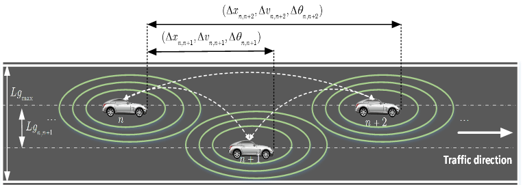
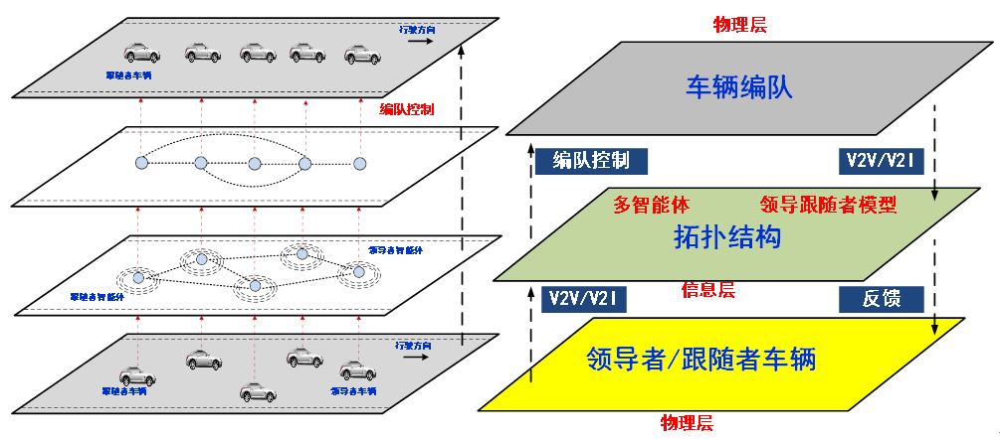
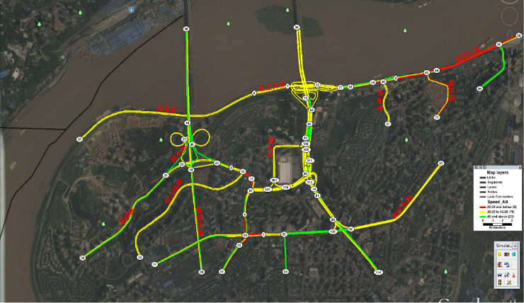
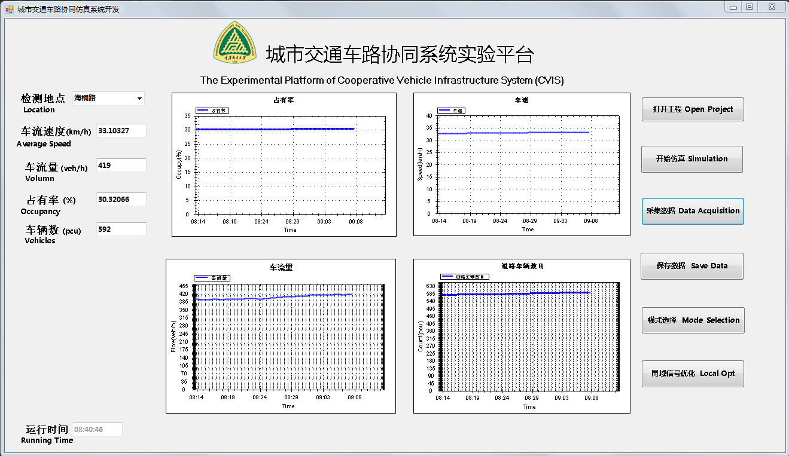
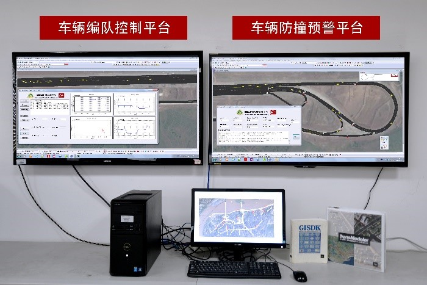
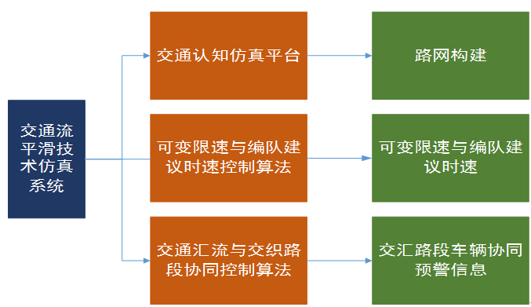

研究动态
研究方向
1.车联网环境下复杂交通系统建模
- 考虑车辆状态信息
- 考虑车辆动力学信息
- 考虑道路结构信息
- 考虑驾驶员特性信息
- 微小扰动法
- 非线性摄动法

2.智能车编队控制
基于多智能体理论和图论，利用Leader-Follower方法，
设计相应的控制协议，进行基于Lyapunov的稳定性分析，实现车辆的编队控制，保证车辆间的侧向间距为零、
纵向间距恒定且跟随车辆的速度与领导车辆一致。

3.城市交通车路协同控制仿真系统平台
基于TransModeler软件，通过路网构建、交通数据加载、
控制算法设计、信号配时，利用GISDK和TsmAPI进行二次开发，实现城市交通的实时状态监控、路径诱导、
干道绿波控制、感应控制等。


4.车辆互联环境下协作式主动交通管理平台


4.1车辆互联环境下的交汇口防撞预警算法
通过路侧设备获取交汇路段中的车辆状态信息，基于提出的TTC防撞预警算法，识别交汇口车辆间潜在的碰
撞风险，进而实时发布交汇路段车辆的预警等级和驾驶决策建议。
4.2车辆互联环境下车辆编队控制算法
通过V2V/V2I通信技术，基于交通流跟驰模型，应用Leader-Follower方法，提出车辆队列形成、入队和出
队的综合控制，建立一套有效的车辆编队组织和管理机制。
科研项目
- 国家自然科学基金(Grant No. 61304197)：T-CPS环境下基于多Agent免疫协同进化理论的微观交通认知
方法研究. 2014.01- 2016.12.
- 重庆科技人才培养(创新青年科技人才培养)(Grant No. cstc2014kjrc-qnrc30002): 面向交通物联网的智
能路侧设备研发. 2014.12- 2017.10.
- 重庆市“151”科技重大专项子课题(Grant No. cstc2013jcsf-zdzxqqX0003)-车辆互联环境下协作式主动
交通管理技术研究.2015.09-2016.08.
- 重庆市工程技术研究中心(Grant No. cstc2011pt-gc30005-1)：重庆市交通物联网工程技术研究中心.
2012.12-2013.12.
- 国家重点研发计划子课题(Grant No. 2016YFB0100906-02)：智能电动汽车的车车/车路通信技术开发.
2016.07-2020.12.
- 重庆市应用开发重点项目(Grant No.cstc2014yykfB40001)：城市交通车路协同控制仿真系统开发.
2014.1-2016.12.
- USDOT Region V Regional University Transportation Center (DTRT12-G-UTC05-159PU):Information
and Transportation Choices, Long- and Short-Term, that Link Sustainability and
Livability-Phase II. 2015.01-2016.12.
- 8. 重庆市决策咨询与管理创新重大项目(cstc2013jccxC00001-1)：重庆市“121”科技支撑示范工程机
制创新研究及应用. 2013.06-2015.06.
- 重庆市教委科学技术研究项目计划(Grant No. KJ 130506)：基于物联网的微观交通认知模型研究.
2013.01- 2014.12.
- 中国工程院重大咨询项目(2012-ZD-15)：我国工业领域产业技术创新支撑体系建设研究.
2012.05-2015.04.
- 中国工程院重点咨询项目(2012-XZ-22)：现代城市综合交通体系构建对策研究. 2012.05-2014.04.
- 重庆市自然科学基金院士专项(cstc2011jjys30001)：交通物联网的理论体系与关键基础研究.
2012.01-2015.06.
学术论文
1.1、期刊论文
- Li, Y., Song, Y., Yang, B., Zheng, T., Feng, H., & Li, Y. (2016). A new lattice hydrodynamic model considering the effects of bilateral gaps on vehicular traffic flow. Nonlinear Dynamics, 1(87), 1-11.--pdf
- Li, Y., Zhang, L., Peeta, S., He, X., Zheng, T., & Li, Y. (2016). A car-following model considering the effect of electronic throttle opening angle under connected environment. Nonlinear Dynamics, 4(85), 2115-2125.--pdf
- Li, Y., Zhang, L., Zhang, B., Zheng, T., Feng, H., & Li, Y. (2016). Non-lane-discipline-based car-following model considering the effect of visual angle. Nonlinear Dynamics, 3(85), 1901-1912.--pdf
- Li, Y., Jiang, X., Zhu, H., He, X., Peeta, S., Zheng, T., & Li, Y. (2016). Multiple measures-based chaotic time series for traffic flow prediction based on Bayesian theory. Nonlinear Dyn, 85(1), 179-194.--pdf
- Li, Y., Kang, Y., Yang, B., Peeta, S., Zhang, L., Zheng, T., & Li, Y. (2016). A sliding mode controller for vehicular traffic flow. Physica A: Statistical Mechanics and its Applications, 462, 38-47.--pdf
- Li, Y., Li, K., Zheng, T., Hu, X., Feng, H., & Li, Y. (2016). Evaluating the performance of vehicular platoon control under different network topologies of initial states. Physica A: Statistical Mechanicsand its Applications, 450, 359-368.--pdf
- Li, Y., Yang, B., Zheng, T., Li, Y., Cui, M., & Peeta, S. (2015). Extended-state-observer-based double-loop integral sliding-mode control of electronic throttle valve.IEEE Transactions on IntelligentTransportation Systems, 16(5), 2501-2510.--pdf
- Li, Y., Zhang, L., Zheng, H., He, X., Peeta, S., Zheng, T., & Li, Y. (2015). Evaluating the energyconsumption of electric vehicles based on car-following model under non-lane discipline.Nonlinear Dyn, 82(1), 1-13.--pdf
- Li, Y., Zhang, L., Zheng, T., & Li, Y. (2015). Lattice hydrodynamic model based delay feedback control of vehicular traffic flow considering the effects of density change rate difference. Communications in Nonlinear Science and Numerical Simulation, 29(1), 224-232.--pdf
- Li, Y., Zhang, L., Peeta, S., Pan, H., Zheng, T., Li, Y., & He, X. (2015). Non-lane-discipline-based car-following model considering the effects of two-sided lateral gaps. Nonlinear Dynamics, 80(1-2), 227-238.--pdf
- Yong-Fu, L., Kou, X. P., Tai-Xiong, Z., & Yin-Guo, L. (2015). Transportation-cyber-physical-systems-oriented engine cylinder pressure estimation using high gain observer. Chinese Physics B, 24(5), 058901.--pdf
- Li, Y., Yang, B., Zheng, T., & Li, Y. (2015). Extended state observer based adaptive back-stepping sliding mode control of electronic throttle in transportation cyber-physical systems. Mathematical Problems in Engineering, 2015.--pdf
- Li, Y., Zhu, H., Cen, M., Li, Y., Li, R., & Sun, D. (2013). On the stability analysis of microscopic traffic car-following model: a case study. Nonlinear Dynamics, 74(1-2), 335-343.--pdf
1.2、会议论文
发明专利
| 序号 |
名称 |
专利号 |
专利类别 |
时间 |
作者 |
| 1 |
一种停车设施管理系统、停车导航装置及停车导航系统 |
ZL 201310155841.5 |
国家发明专利 |
2013.05 |
李永福，周伟博等 |
| 2 |
一种道路交汇口防撞预警方法、路侧系统与防撞系统 |
201610228081.X |
国家发明专利 |
2016.04 |
李永福，
张力等
|
| 3 |
一种基于车路协同技术的车辆编队方法及其系统 |
201610181181.1 |
国家发明专利 |
2016.03 |
李永福，
宋宇等
|
| 4 |
一种基于混沌理论的交通状态预测方法 |
201510274329.1 |
国家发明专利 |
2015.05 |
李永福，
蒋肖等
|
| 5 |
基于车联网的实时交通诱导路侧系统及实时交通诱导方法 |
201511013578.1 |
国家发明专利 |
2016.01 |
李永福，
蒋肖等
|
| 6 |
一种车路协同通信方法及系统 |
201310615799.0 |
国家发明专利 |
2013.11 |
李永福，
窦广健等
|
| 7 |
一种基于移动智能终端的汽车发动机启动方法及系统 |
201410839873.1. |
国家发明专利 |
2014.10 |
钟志华,
李永福等
|
| 8 |
一种基于物联网的汽车发动机定位方法及系统 |
201410840107.7 |
国家发明专利 |
2014.10 |
钟志华,
李永福等
|